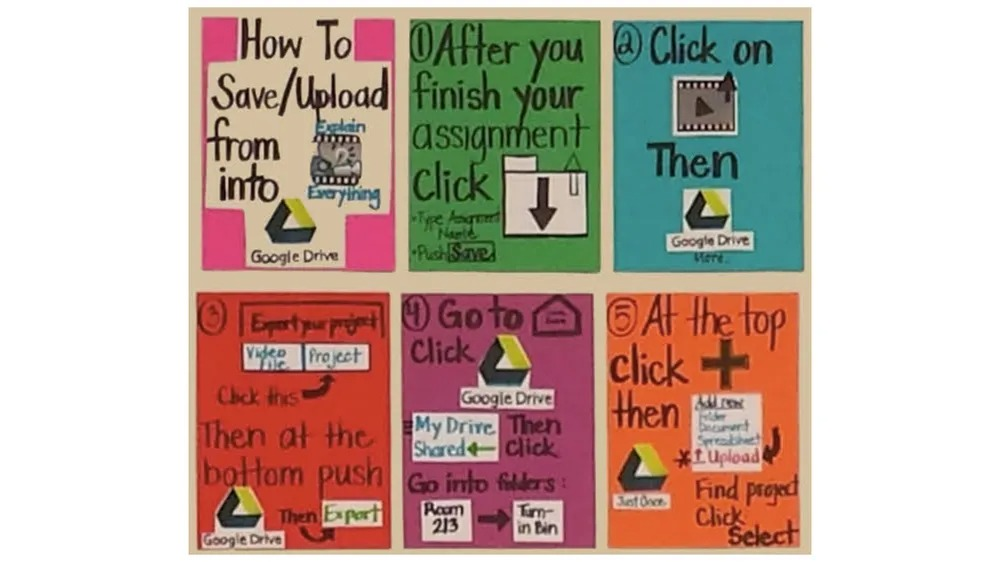
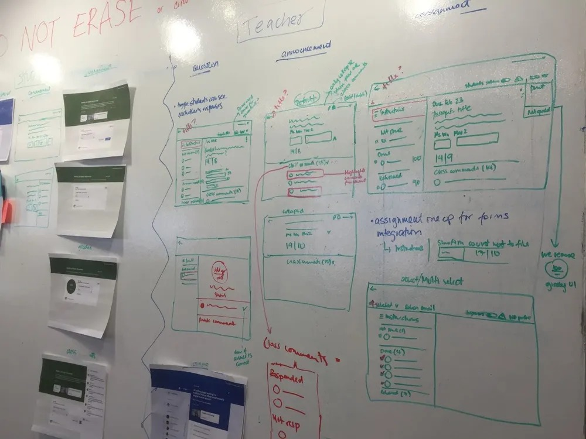

Nicole Marinello had just started her education career when she joined the first pilot of Google Classroom in October 2013. Teaching English at a prep school in Brooklyn, New York, she used to lug three heavy bags of paper, books and folders to school every morning, and spend 45 minutes every day printing and collating more material to lug back home — if she could get an opening. “The copy machine is hard to get time on in the morning,” she told the Classroom team at the time.
Nicole was one of three teachers and about 100 students in the pilot. Her reaction to our Classroom prototype — designed to streamline how teachers distribute and grade students’ work using Workspace tools — was typical. It was a major time-saver, and the ability for students to submit papers electronically to Drive was particularly exciting. “I don’t do this now because I’ll get 80 emails at once from students!” she said.
Throughout the pilot, the team interviewed teachers and students for feedback, but some of their biggest learnings came from just observing. “I noticed a group of students on their phones in Nicole’s class and thought, they’re definitely not paying attention,” says Jennifer Holland, a program manager on the Classroom team at the time. “We didn’t have an app and our prototype wasn’t mobile responsive, so we didn’t even consider they’d be doing their in-class assignment. Sure enough, they were accessing Classroom in their mobile browsers doing just that.”
When she asked why they weren’t using one of the many laptops in the room, one student told her, “I can swipe a lot faster than I can type.” “We immediately knew we had to prioritize getting a mobile app on the roadmap,” Jennifer says.
Google Classroom officially launched in August 2014 — an app would follow a few months later — as part of our Google Apps for Education suite, now Workspace for Education. In the 10 years since, it has grown from an assignment distribution system designed to save teachers’ time to a robust, AI-powered platform that lets them more easily create and distribute classwork, engage directly with students, keep parents and guardians abreast of progress and more. Along the way, the team has continued to work with schools around the world via the Google for Education Pilot Program to continue evolving as educators’ needs have changed. Today, more than 150 million teachers and students use Classroom and Assignments globally.
It was listening to teachers and students that brought Classroom to life in the first place.
In the early 2010s, the team saw increased interest from higher-education and K-12 institutions in Workspace apps — and frustration that the apps didn’t work well together in a school setting. Teachers were having to switch between apps and manually create individual docs for students’ assignments; students struggled through multi-step processes to submit their work. “We needed to create the ‘glue’ that would bring these tools together into a cohesive and user-friendly platform that supports teaching and learning,” says Jennifer, now director of Program Management for Google for Education.
By mid 2013, an engineering team was assembled. Work towards the alpha and eventual launch began. What they delivered wove together Docs, Drive and Gmail to help teachers create and collect assignments paperlessly, track students’ work, provide real-time feedback and give students ways to stay organized.
The key selling point for Classroom was its simplicity. Jennie Magiera joined Google as the Global Head of Education Impact in 2020, but in 2014 she was a math teacher and instructional coach in Chicago Public Schools who helped get 32 sites — including her own — into an early Classroom pilot. “A lot of learning management systems can be daunting, especially for those who don’t have much experience with technology, but Google Classroom had this balance of being really intuitive and really powerful,” Jennie says. “Classroom was so easy that second graders could do it. Some were pre-literate. The fact they could do it without secure reading skills was game-changing.”
Classroom maintained that simplicity of use even as, over the years, it greatly expanded its capabilities with 800+ product updates. The team introduced rubrics to help teachers grade work, an in-depth gradebook to track those scores and the integration of third-party edtech tools and programs to help create a varied and engaging curriculum. Input from teachers and students remained vital. “Our early pilots evolved into a robust program with schools across the world,” Jennifer says. “We use it to test the flow of everything we launch.”
Some of the biggest changes to Classroom and the Workspace for Education suite came at the most trying time for the team: the start of the COVID-19 pandemic. As lessons went virtual, the team released a slew of helpful new features, launched in 10 new languages to meet the global moment and integrated Meet into Classroom. They took feedback from teachers to the Meet team, who developed new functionality to help with classes, like attendance taking, hand raising and in-meeting polls for easy pop quizzes.
“It was a tough time but also a reminder of our purpose and why we work on this team,” Jennifer says. “We had to do things we hadn’t done before — but it was a gift.”
In recent years, Classroom has evolved even further with AI-powered features for more personalized learning and impactful teaching. In 2022, the team introduced practice sets, a tool that enables teachers to create interactive assignments from existing content or from scratch, and provides real-time guidance and suggested resources as students work through their questions. “The kids were calling it ‘Google magic’ because of the hints, pop-ups and instant feedback they received,” a teacher piloting the feature said.
Last November, the team piloted a feature that provides AI-suggested questions for certain science-related YouTube videos, reducing the time it takes to create interactive video activities. And in August, they announced student groups, allowing teachers to build tailored content for clusters of students within their classes.
“In the beginning, our mantra was ‘more teaching, less tech-ing,’ which is still true but in a very different sense,” says Classroom Group Product Manager Brit Mennuti. “Back then, it was really about automating administrative tasks so that teachers can get back to the things a human teacher can do, like developing relationships with students and intervening when they need support. We’re now at the point with generative AI where we’re not just saving teachers time, but amplifying the impact they can have.”
The Classroom team continues to experiment with ways AI can help increase that impact. They recently invited schools to sign up to pilot new capabilities informed by LearnLM, a family of models fine-tuned for learning, based on Gemini, and grounded in educational research.
“We're in yet another paradigm shift in education," Jennifer says. "With these AI features, I’m excited to see how teachers and students will push the boundaries of what's possible with Classroom, just like those students in Brooklyn a decade ago redefined learning in Classroom with their mobile phones.”